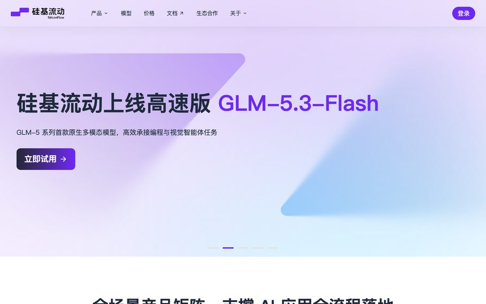
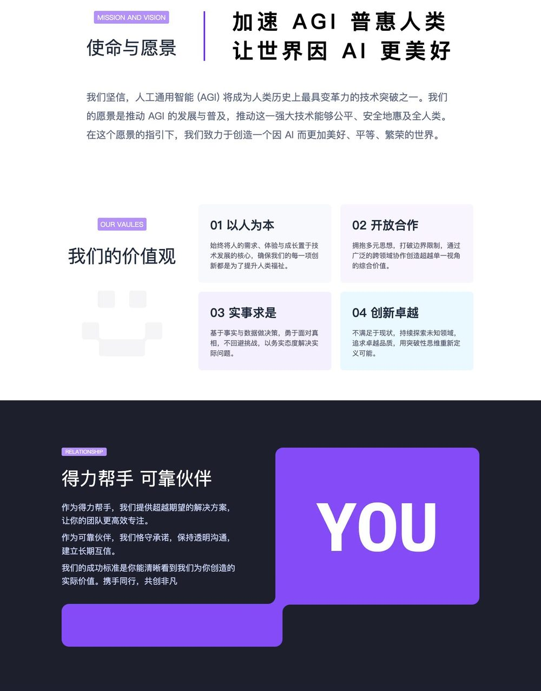
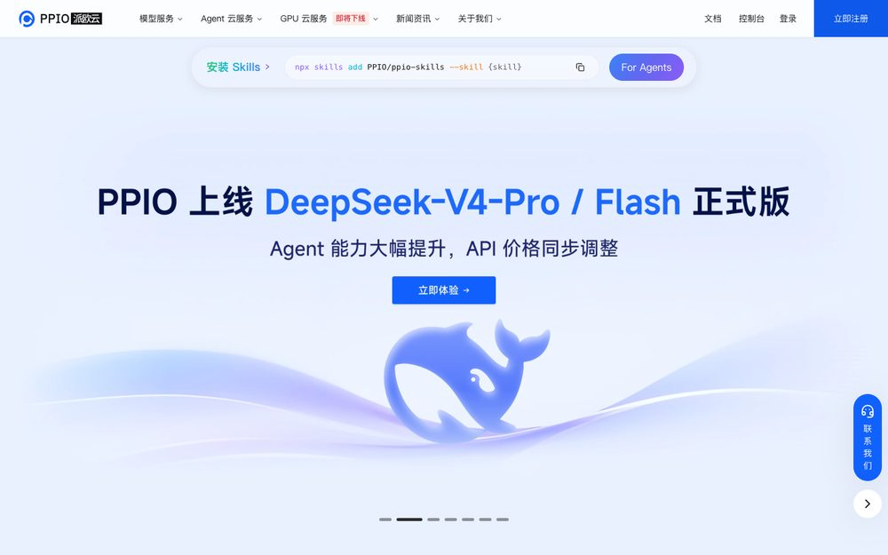
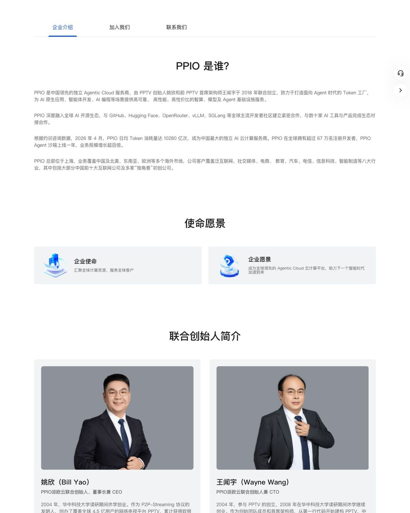
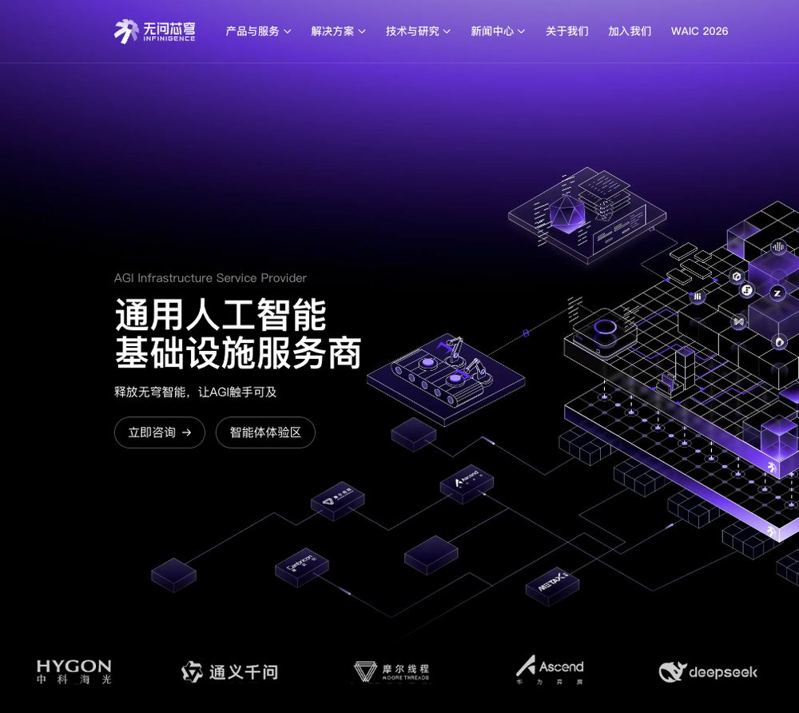
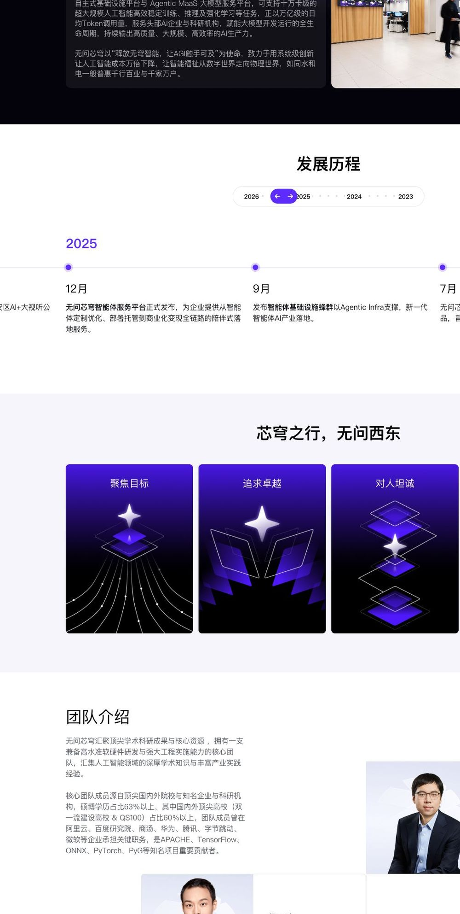
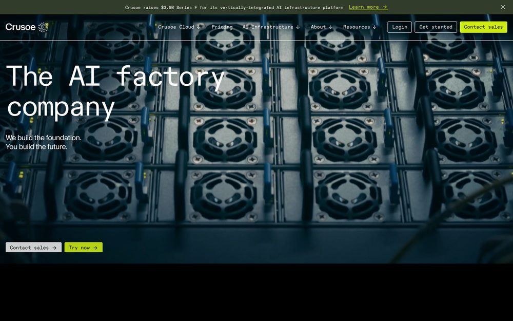
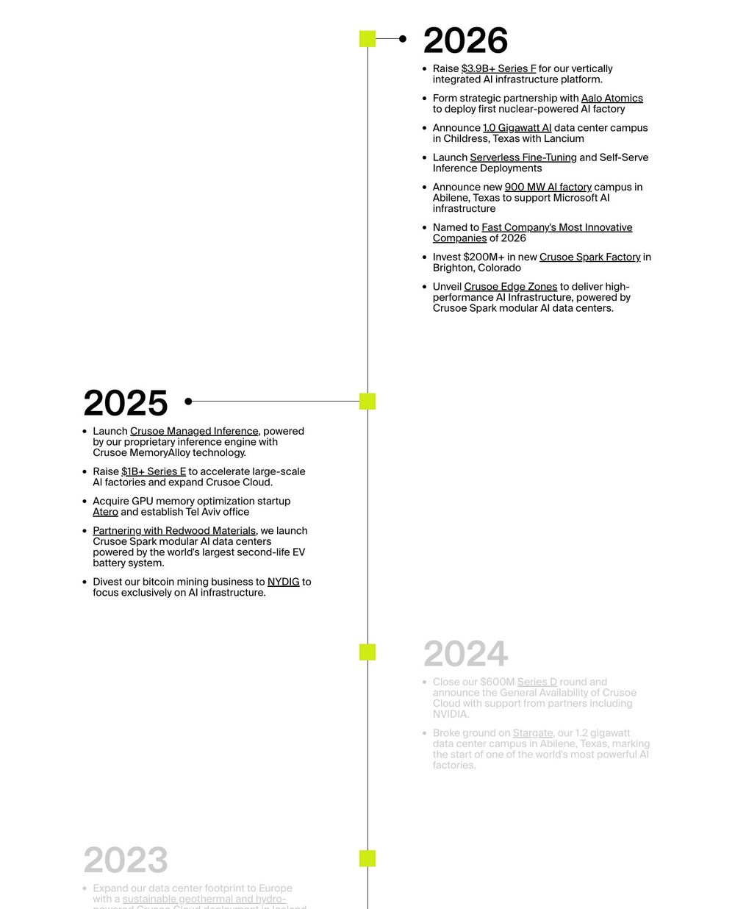
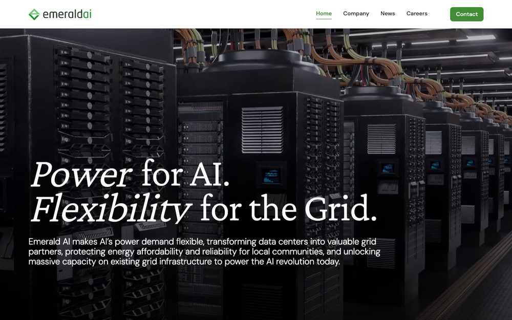
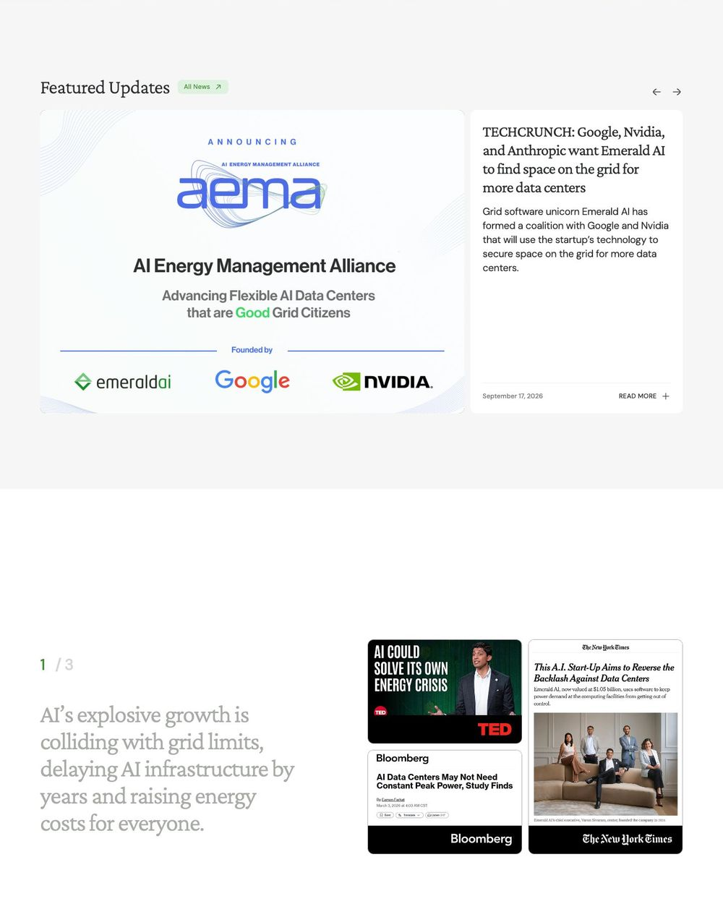

沐仞科技 · 竞品品牌逻辑拆解 · 内部 · 2026-10-13
五家同类公司的品牌与品牌逻辑
选取方法：按沐仞 BP 第 25 页自己划分的五类竞品各取一家。官网首页、"关于我们"页和品牌页在 2026-10-13 用无头 Chrome 现场抓取（截图与全文存于 brand_logic_2026-10-13/），其余信息来自公开报道、融资新闻、招股材料和网页存档，每条都标了来源编号。拆解框架用 COM 521 的品牌工具：品牌故事（现状、冲突、解决）、使命价值观、一句话定位与演变、证明点、客群分层、人格语气、视觉表达、中心度与独特度、传播打法，最后用一句话写清"先让客户相信什么、用什么证明、靠什么留住"。凡写"未找到公开来源"的项，表示查过但没有依据，没有推测补齐。
BP 分类 公司 一句话定位（官网现行） 使命原文 品牌逻辑：先信什么 / 用什么证明 / 靠什么留住 API 平台 硅基流动 大模型 API 与 AI 云服务平台；首屏轮播「一站式 Token 智能调度平台」 加速 AGI 普惠人类 先信"中立、什么模型都有、又快又便宜"；用首发速度、国产芯片适配、千万用户和第三方排名证明；靠开发者工具内置、智能路由和私有化交付留住。 算力聚合 PPIO 派欧云 中国领先的独立 Agentic Cloud 服务商；面向 Agent 时代打造 Token 工厂 汇聚全球计算资源，服务全球客户 先信"Agent 时代需要一座独立、便宜的 Token 工厂"；用日均万亿级 Token、5000+ 节点、咨询机构排名和"5 折"价格证明；靠 Agent 沙箱与托管、企业 Token Plan 的席位和预算绑定留住。 异构算力优化 无问芯穹 通用人工智能基础设施服务商；「M 种模型 × N 种芯片」 释放无穹智能，让AGI触手可及 先信"芯片碎片化是瓶颈，需要中立的 M×N 中间层"；用清华学术成果、16 种芯片纳管、头部模型客户和政府平台证明；靠 Token 工厂与 Agentic Infra 的持续调用留住。 能源资产延伸 Crusoe The AI factory company；副标 We build the foundation. You build the future. Accelerate the abundance of energy and intelligence 先信"AI 卡在电上，而我们从电开始"；用 GW 级园区、头部客户和融资规模证明；靠垂直整合的长期容量合同和云上托管推理留住。 算电协同软件 Emerald AI Power for AI. Flexibility for the Grid. 把 AI 数据中心变成电网的柔性资产（新闻稿表述） 先信"缺的不是电，是柔性；AI 可以从电网负担变成盟友"；用同行评审论文、电网公司联名演示和 NVIDIA 参考架构证明；靠可审计的验证数据、并网规则与联盟标准留住。
1. 硅基流动 SiliconFlow BP 分类：API 平台 · siliconflow.cn

首页首屏，2026-10-13：轮播挂新模型上线 
/brand「品牌焕新」页：使命、四条价值观、关系承诺、色值
命名与 logo 中英文名来由：未找到公开来源。工商曾用名「北京硅动科技」，2026-06 改制为股份公司8 。品牌页只说新 logo 动画讲述"无限可能"，没有图形释义2 。 品牌故事 现状 ：大模型落地的门槛是推理算力成本。冲突 ：创始人袁进辉第一次创业做 OneFlow，技术领先但没能商业化，团队被收购后并入美团。解决 ：2023-08 二次创业，"先想商业化"，定位为不做模型、不做应用的中立中间层9 10 。使命与价值观 使命「加速 AGI 普惠人类」，配句「让世界因 AI 更美好」；价值观：以人为本、开放合作、实事求是、创新卓越；对客户的关系承诺：「得力帮手 可靠伙伴」2 。品牌页同时给出色值与 Logo 下载，是一页简版品牌手册。 定位演变 2024-03 自称 AI Infra，主打降本加速9 → 2024-06 SiliconCloud「一站式云服务平台」，卖点"更全、更快、更便宜"11 → 2025-02 与华为云在昇腾上首发 DeepSeek R1/V313 → 2025-06 品牌焕新并上线国际站4 → 2026-06 资本市场口径改为「Token 工厂」和"独立词元供应平台"6 8 。现行公司介绍自称"国内领先的独立生态词元（Token）供应平台"4 。 证明点 注册用户 1000 万+、企业客户 13000+（截至 2026-04）、170+ 模型、适配昇腾 / 沐曦 / 摩尔线程4 ；沙利文称其"中国最大的独立生态词元供应商"7 ；LangChain、Dify、Cherry Studio 等近百款工具预置为模型服务商4 ；自研推理引擎，宣称延迟最多降 70%1 ；B 轮超 20 亿元6 。反面事实：2025 年营收 5533 万元、净亏损 3.45 亿元7 。 客群与入口 个人开发者与中小企业：按量付费 Serverless，入口「登录 / 立即体验」；企业：预留实例；大型机构与政务：私有化 MaaS 与一体机，入口「联系我们」；智算中心：「AI 算力运营服务（Token Factory）」1 4 。 人格与语气 务实（"让模型调用更省、更稳"）、爽快带促销感（"狂送 2000 万 Token/人"13 ）、理想主义（使命句）。英文站偏极客玩梗3 。 视觉 主色紫 #6E29F6，辅色黑白（品牌页公布 CMYK / RGB）2 ；中文站白到淡紫渐变、半透明圆角块呼应 logo 的阶梯形；英文站深色底、霓虹绿按钮、渐变线框积木3 。 中心度 × 独特度 中心度高：模型 API、按 token 计价、OpenAI 兼容、免费额度都是品类标配。独特度靠"中立独立 + 国产芯片最多"：对火山方舟、阿里百炼强调大厂只优化自家模型和算力15 。与 PPIO 同时自称"独立第一"，用的是不同咨询机构的口径7 16 。 传播打法 借时点：618 送 token、OpenAI 断供日推「Token 自由」（二手来源）、DeepSeek 爆红时抢首发加邀请裂变11 12 13 ；首屏长期挂模型首发；开发者工具内置；OneFlow 公众号、B 站、小红书、知乎、GitHub；资本口径用榜单与咨询报告6 。
品牌逻辑： 先让客户相信"中立独立、什么模型都有、又快又便宜"，再用首发速度、国产芯片适配、千万用户和第三方排名证明，最后靠开发者工具内置、智能路由（TokenPlus）和私有化交付把客户留住。
来源（访问或发布日期）
硅基流动官网首页 https://www.siliconflow.cn/ （2026-10-13 抓取）
品牌理念页 https://www.siliconflow.cn/brand （2026-10-13 抓取）
SiliconFlow 英文站 https://www.siliconflow.com （2026-10-13）
公司介绍页 https://www.siliconflow.cn/about （2026-10-13 抓取）
SiliconFlow About https://www.siliconflow.com/about （2026-10-13）
36氪《硅基流动完成新一轮超20亿元融资》https://www.36kr.com/p/3855461124389767 （2026-06-16）
澎湃《硅基流动冲击"AI Token工厂第一股"》https://m.thepaper.cn/newsDetail_forward_33494133 （2026-07-02）
港交所申请材料 https://www1.hkexnews.hk/app/sehk/2026/108701/a134761/sehk26063002975.pdf （2026-06-30）
36氪 袁进辉二次创业报道 https://www.36kr.com/p/2678752219887366 （2024-03-07）
钛媒体《硅基流动的IPO叙事，被严重误解了》https://www.tmtpost.com/8055443.html （2026-07-07）
智源社区转 OneFlow：SiliconCloud 上线 https://hub.baai.ac.cn/view/37566 （2024-06-01）
掘金「Token 自由」相关文章（二手，未直接核对）https://juejin.cn/post/7385935890932269075 （2024-06）
智源社区：硅基流动 x 华为云首发 DeepSeek R1 & V3 https://hub.baai.ac.cn/view/43060 （2025-02-03）
TokenPlus 官网 https://www.tokenplus.cn/ （2026-10-13）
凤凰网科技《以硅基流动为样本，理解独立 Token 供应平台的生意》https://tech.ifeng.com/c/8wZnEExTn00 （2026-09-20，自媒体稿）
同花顺《日均Token调用破万亿 PPIO的"Token工厂"核心竞争力在哪?》https://stock.10jqka.com.cn/20260709/c678068412.shtml （2026-07-09，仅搜索摘要）
2. PPIO 派欧云 BP 分类：算力聚合 · ppio.com（ppio.cn、ppinfra.com 已跳转）

首页首屏，2026-10-13：顶部是给 Agent 装 Skills 的命令行，轮播挂模型首发 
关于页：PPIO 是谁、使命愿景、联合创始人、商业价值观
命名与 logo 「PPIO」字母含义与 logo 含义：未找到公开来源。2020 年官网写明前身是 PPTV4 。logo 为蓝色环形图标加「PPIO」字样和黑底标签，标签 2023 年写「边缘云」、2025 年改「派欧云」，图标未变5 6 。 品牌故事 现状 ：全球算力供需错配，大量闲置10 。冲突 ：行业 GPU 利用率只有四到五成13 。解决 ：不自建算力，聚合闲置资源统一调度，姚欣比作"算力版的滴滴"9 12 。创始人叙事贯穿始终：为看奥运直播写 P2P 代码做出 PPTV、卖给苏宁、2018 年二次创业2 。2020 年讲过的"区块链 + 分布式云存储"故事已弃用4 。使命与价值观 使命「汇聚全球计算资源，服务全球客户」；愿景「成为全球领先的 Agentic Cloud 云计算平台」；商业价值观三条：价值创造、商业落地、全球普适，每条都用"不要过于关注……而要……"句式写2 。 定位演变 2020「区块链 + 分布式云存储平台」4 → 2022–24「中国领先的独立边缘云服务提供商」5 → 2024–25 子品牌「派欧算力云」，"一站式 AIGC 云服务平台"7 → 2025-01「中国领先的分布式云服务商」6 → 2026-07 WAIC 发布 Agentic Cloud 新定位与"智能 Token 工厂" 8 → 现行 title「中国领先的独立 Agentic Cloud 服务商」1 。首页「GPU 云服务」已标"即将下线"1 。 证明点 首页：200+ 模型、日均 Token 22000 亿+、注册用户 68 万+、全球节点 5000+、LLM API 稳定性"高达 99.9%"1 。口径不一：关于页写 2026-04 日均 10280 亿（灼识咨询）2 ，WAIC 稿写 2026-06 超 1.2 万亿8 ，Token Plan 页 SLA 写"最大 99.5%"3 。灼识称其中国独立 AI 云按日均 Token 第一8 。客户：极豆、Monica、像素绽放、蜜度，及"大部分中国前十大互联网公司"1 2 。 客群与入口 开发者：免费注册进控制台，首页专设 Skills / MCP / CLI 区，分"For Agents / For Developers"1 ；企业：「企业 Token Plan」，最多 200 席位、带预算管理3 ；出海：覆盖北美、东南亚、欧洲2 。页脚把对外邮箱拆成媒体、资源合作、投资者关系三个1 。 人格与语气 时代宏大（"面向 Agent 时代打造 Token 工厂"）、工程公式化（"Agent 生产力 = Token 智能密度 × Agent Loop 时长"8 ）、精打细算敢挑衅（"低至 5 折""秒杀传统 Spot"1 ）。 视觉 logo 蓝 #1161FE，站内最高频 #2874FF，辅紫 #8B5CF6、浅蓝灰底 #F2F4FA；系统字体；等轴测 3D 半透明玻璃方块与服务器阵列，蓝紫光斑1 。 中心度 × 独特度 中心度高：卖的模型和别家一样，API 兼容 OpenAI 与 Anthropic1 。"Token 工厂"和"独立"都不是它独有的词15 。独特度来自三点：边缘云时代攒下的分布式节点网络；抢先占住 Agent 沙箱与托管这一层；咨询机构的"独立第一"排名。 传播打法 WAIC 发布会配理念公式8 ；抢模型首发14 ；价格口号「低至 5 折」「低至 4.5 折」1 3 ；初创加速计划送代金券7 ；面向 Agent 的开发者工具；IPO 期间借 PPTV 话题（"你还记得PPTV吗"）12 。
品牌逻辑： 先让客户相信"Agent 时代需要一座独立、便宜的 Token 工厂"，再用日均万亿级 Token、5000+ 节点、咨询机构第一和 5 折价格证明，最后靠 Agent 沙箱与托管、企业 Token Plan 的席位和预算绑定留住客户。
来源
PPIO 官网首页 https://ppio.com （2026-10-13 抓取）
关于 PPIO https://ppio.com/about?index=0 （2026-10-13 抓取）
PPIO 企业 Token Plan https://ppio.com/token-plan （2026-10-13）
ppio.cn 存档 https://web.archive.org/web/20200806003147/https://www.ppio.cn/ （2020-08-06）
ppio.cn 存档 https://web.archive.org/web/20230209081435/https://www.ppio.cn/ （2023-02-09）
ppio.cn 存档 https://web.archive.org/web/20250116003622/https://www.ppio.cn/ （2025-01-16）
ppinfra.com 存档 https://web.archive.org/web/20250114014205/https://ppinfra.com/ （2025-01-14）
新华网《PPIO亮相WAIC 2026…智能Token工厂》https://www.news.cn/finance/20260720/dee55878530e449699ede64c4ab5d18a/c.html （2026-07-20）
36氪《PPTV创始人姚欣再战资本市场，派欧云二次递表》https://www.36kr.com/p/3848636043590528 （2026-06-11）
量子位《华科校友在港冲刺AI infra第一股》https://www.qbitai.com/2025/06/301513.html （2025-06-25）
36氪/猎云《创业牛人带队冲刺IPO》https://www.36kr.com/p/3374203251595400 （2025-07-11，仅用于核对时间线）
虎嗅《你还记得PPTV吗？它的创始人准备去上市了》https://www.huxiu.com/article/4866548.html （2026-06-11）
证券日报/同花顺《日均Token调用破万亿 PPIO的"Token工厂"核心竞争力在哪？》https://stock.10jqka.com.cn/20260709/c678068412.shtml （2026-07-09）
量子位《PPIO首批上线DeepSeek-V4预览版》https://www.qbitai.com/2026/04/406802.html （2026-04-24）
澎湃《硅基流动冲击"AI Token工厂第一股"》https://www.thepaper.cn/newsDetail_forward_33494133 （2026-07）
3. 无问芯穹 Infinigence AI BP 分类：异构算力优化 · infinigence-ai.com（infini-ai.com 已跳转）

首页首屏，2026-10-13（右侧 Cookie 弹窗已裁掉，未点同意） 
公司介绍页：使命、发展历程、价值观「芯穹之行，无问西东」
命名与 logo CEO 夏立雪的解释：「无问」取自清华校歌的"无问西东"，「芯穹」指把芯片价值发挥到无穷7 ；官方简称「无穹」6 。英文名 Infinigence 的释义：未找到公开来源。logo 是 7 片透明度递增的紫色花瓣组成的旋涡3 。 品牌故事 现状 ：国产模型和芯片都很分散，芯片之间形成"生态竖井"9 。冲突 ：算力既供大于求又供小于求，不同架构的芯片"说不同的语言"7 8 。解决 ：在模型与芯片之间做 M×N 中间层，自称中立第三方，不做芯片、不做通用大模型、不做 C 端应用5 13 ；落点是"用算力像用水用电一样便捷"7 。使命与价值观 使命「释放无穹智能，让AGI触手可及」；2023 至 2025 年底的版本是「释放无穹算力 」，后改为「智能」4 11 。愿景未单列，最接近的是"让人工智能成本万倍下降"2 。价值观四条：聚焦目标、追求卓越、对人坦诚、对事担当，总题「芯穹之行，无问西东」2 。 定位演变 2023-12 官网只写 Infinigence，主打能效优化工具包加国产芯片4 → 2024-07 WAIC 千卡异构混训平台9 → 2024-09 媒体称"算力运营商"，官网描述为"M×N 中间层"5 8 → 2025-11 宣布转型"智能体原生基础设施"11 → 2026-07 发布「前店后厂一中心」战略：算力集散中心、Token 工厂、AI 生产力商店 14 。 证明点 清华电子系推动成立，FPGA 2025 最佳论文2 ；芯片适配数从 2024 年 6 种增至 2026-07 的 16 种、纳管 3.7 万 P8 14 ；点名客户含智谱、Kimi、MiniMax、瑞金医院8 14 ；北京、杭州公共算力平台等政府项目2 ；累计融资超 22 亿元12 ；官网列二十余项荣誉，含 MIT 科技评论"50 家聪明公司"2 。 客群与入口 四类解决方案：AI 原生企业、智能制造、AIGC、智能硬件。To B 走「立即咨询」表单；开发者走「登录平台」进云控制台；另设「智能体体验区」1 。 人格与语气 宏大（"让智能无处不在"）、公式化理性（"芯片算力×优化系数×集群规模"8 ）、精英自信（"全球领先 全栈贯通"1 ）。 视觉 紫 #5D2BFE 渐变到黑底，辅 #A488FE、深灰 #16181D；系统字体，无定制字体1 3 ；首屏为等轴测芯片插画（2026-10-13 截图可见）。 中心度 × 独特度 中心度高：沿用"AGI 基础设施""Token 工厂"等品类通用词。独特度靠"M×N 异构 + 中立第三方"区隔昇腾生态和云厂商，靠清华学术背书区隔偏开发者的硅基流动和 PPIO（分析）。 传播打法 以 WAIC 为年度主场，2024、2025、2026 三年各发一次战略或产品，官网导航常驻「WAIC 2026」1 9 10 14 ；融资新闻、学术成果与开源、政府和国资共建平台发布、创始人深度访谈2 7 13 。
与沐仞撞词： 无问芯穹 2026-07 的战略名是「前店后厂一中心」，其中"Token 工厂"对应后厂、"AI 生产力商店"对应前店14 。这正是沐仞 BP 与公司介绍长文里的核心说法「前店后厂」。调研还提到清程极智同期也在用这个词（仅检索摘要）14 。沐仞对外再用"前店后厂"，会被读成跟随者。
品牌逻辑： 先让客户相信"芯片碎片化是行业瓶颈，需要一个中立的 M×N 中间层"，再用清华学术成果、16 种芯片和 3.7 万 P 纳管、头部模型客户与政府平台证明，最后靠 Token 工厂和 Agentic Infra 的平台化与持续调用留住客户。
来源
无问芯穹官网首页 https://www.infinigence-ai.com/ （2026-10-13 抓取）
公司介绍页 https://www.infinigence-ai.com/about-us.html （2026-10-13 抓取）
官网 logo 文件 https://www.infinigence-ai.com/static/home/svg/logo.svg （2026-10-13）
Wayback 快照 https://web.archive.org/web/20231213155429/https://www.infini-ai.com/ （2023-12-13）
Wayback 快照 https://web.archive.org/web/20240913041924/https://www.infini-ai.com/ （2024-09-13）
开发者平台 https://cloud.infini-ai.com/genstudio （2026-10-13）
科技日报转清华新闻《夏立雪：让用算力像用水用电一样便捷》https://www.tsinghua.edu.cn/info/1182/119968.htm （2025-07-03）
36氪/量子位《再融近5亿……算力运营商》https://www.36kr.com/p/2935434589624969 （2024-09-04）
爱范儿 WAIC 2024 报道 https://www.ifanr.com/1591613 （2024-07-05）
投资界 WAIC 2025 报道 https://news.pedaily.cn/20250728/111395.shtml （2025-07-28，仅检索摘要）
澎湃《无问芯穹完成近5亿元A+轮融资》https://m.thepaper.cn/newsDetail_forward_32063024 （2025-11-28）
东方财富《再获超7亿元融资！》https://finance.eastmoney.com/a/202605093732130893.html （2026-05-09）
虎嗅《半年20余倍增长，一个中国Token工厂的生意飞轮》https://www.huxiu.com/article/4867715.html （2026-06-20）
智东西/凤凰《前店后厂一中心 Agentic Infra 战略》https://tech.ifeng.com/c/8uwv0WEuivp （2026-07-21）
4. Crusoe BP 分类：能源资产延伸 · crusoe.ai（原 Crusoe Energy Systems）

首页首屏，2026-10-13：机房实拍 + 等宽大字主标 
About / Company 页"Our story"时间线：2025 年卖掉比特币挖矿，专做 AI
命名与 logo 名字取自《鲁滨逊漂流记》。联合创始人 Cully Cavness 在播客里说，这是"在稀缺资源下足智多谋"的故事1 ；两位创始人 2017 年徒步时决定用"被困住、用不上的能源"驱动计算2 。logo 为定制无衬线字标（仅二手来源）3 。 品牌故事 起点 ：油田伴生气没有管道外运，只能就地烧掉，既浪费又排放。解决 ：把模块化计算设备放到火炬口发电跑计算（Digital Flare Mitigation）4 。2025-03 把比特币挖矿与火炬气业务卖给 NYDIG，专做 AI5 8 。现在的讲法 ：AI 卡在电上，所以先找电，再建 AI 工厂，再开云6 ；Impact 页已不再提火炬气7 。使命与价值观 现行使命「Accelerate the abundance of energy and intelligence」8 ；2022–2025 的旧使命是"让计算的未来与气候的未来一致"4 9 。价值观六条，第一条 "Think like a mountaineer"，第三条 "Bend the arc of energy toward sustainability"8 。 定位演变 2019–2022 面向油气公司的火炬气方案10 11 → 2023-03 至 2024-10 首屏 "Aligning the Future of Computing with the Future of the Climate"12 13 → 2024-12 "The world's favorite AI-first cloud"14 → 2025-08 首屏改为 "The AI factory company" 16 → 2025-10 新闻稿公司介绍段换新使命但保留 "clean energy"17 → 2026-03 介绍段删去"清洁 / 环保"，只留 "energy-first"18 。官方没说为何后撤；同期 Heatmap 报道它收购 4GW+ 天然气产能并质疑其气候科技身份20 ，给微软的 900MW 园区用现场燃气轮机21 。 证明点 融资：2024-12 D 轮 6 亿美元、2025-10 E 轮 13.75 亿美元、2026-09 F 轮 39 亿美元8 17 22 。规模：签约产能 6GW+，Abilene 一期 1.2GW 为 Oracle 与 OpenAI 建设21 22 ，另有微软 900MW 园区18 。云客户：Cognition、Figure、Perplexity22 。Impact 页给社区数字：支撑 1.5 万+ 岗位、本地投资 200 亿美元+，并引用当地官员证言7 。 客群与入口 新闻稿分四类客户：AI 原生、超大规模云、前沿模型实验室、企业22 。导航把两块业务分开：「Crusoe Cloud」（含定价、托管推理）与「AI Infrastructure」（数据中心、制造、能源）6 。首页四根支柱依次是托管 AI、云平台、数据中心、能源优先，能源排在最后6 。 人格与语气 宏大（"abundance of energy and intelligence"）、求快（"Move fast and make things"）、克制的建造者（"We build the foundation. You build the future."）6 8 。 视觉 近黑 #181717 加荧光黄绿 #CEEB13；Suisse Intl 加 ABC Diatype Mono，等宽字做大标题；机房与园区实拍6 16 。招聘帖要求"极简风格、完美排版"19 。 中心度 × 独特度 同类 CoreWeave、Lambda、Together、Nebius 的首屏都在讲"云"24 ，只有 Crusoe 讲"公司类型 + 能源"。中心度靠"AI cloud"品类说法维持25 ；独特度靠能源到云的垂直整合。行业分析认为它更像地产开发商23 。 传播打法 高频交易类新闻稿，每篇结尾的公司介绍段随战略改写17 18 ；播客（Acquired、MCJ）1 26 ；Climate Week、达沃斯、NVIDIA GTC 发布新品牌12 19 ；Gartner 与第三方速度榜单22 ；每年发 Impact Report7 。
品牌逻辑： 先让客户相信"AI 卡在电上，而我们从电开始"，再用 GW 级园区、头部客户和融资规模证明，最后靠垂直整合的长期容量合同和 Crusoe Cloud 的托管推理留住客户。
来源
MCJ Inevitable: Cully Cavness https://mcj.vc/inevitable-podcast/crusoe-cully-cavness （2025-04-24）
Contrary Research: Crusoe https://research.contrary.com/company/crusoe （2026）
DesignYourWay: Crusoe logo（二手）https://www.designyourway.net/blog/crusoe-logo/ （日期不详）
Lochmiller, Is Crusoe a climate tech company? https://www.crusoe.ai/resources/newsroom/crusoe-climate-tech （2022-05-08）
NYDIG to acquire Crusoe's bitcoin mining https://crusoe.ai/newsroom/nydig-to-acquire-crusoes-bitcoin-mining-operation-crusoe-to-scale-vertically/ （2025-03-25）
Crusoe 首页 https://www.crusoe.ai/ （2026-10-13 抓取）
Crusoe Impact https://www.crusoe.ai/about/impact （2026-10-13 抓取）
Crusoe Company https://www.crusoe.ai/about/company （2026-10-13 抓取）
Abilene 扩至 1.2GW https://www.crusoe.ai/resources/newsroom/crusoe-expands-ai-data-center-campus-in-abilene-to-1-2-gigawatts （2025-03-18）
Wayback https://web.archive.org/web/20190723221654/https://www.crusoeenergy.com/
Wayback https://web.archive.org/web/20220120225651/https://www.crusoeenergy.com/
Wayback https://web.archive.org/web/20230308085212/https://www.crusoeenergy.com/ ；https://web.archive.org/web/20231130075146/https://www.crusoe.ai/
Wayback https://web.archive.org/web/20241014221305/https://crusoe.ai/ ；https://web.archive.org/web/20240301064545/https://crusoe.ai/
Wayback https://web.archive.org/web/20241210004716/https://crusoe.ai/
Wayback https://web.archive.org/web/20250304012113/https://crusoe.ai/
Wayback https://web.archive.org/web/20250814212530/https://www.crusoe.ai/
Series E https://www.crusoe.ai/resources/newsroom/crusoe-announces-series-e-funding （2025-10-24）
Microsoft 900MW https://crusoe.ai/resources/newsroom/crusoe-announces-new-900-mw-ai-factory-campus-in-abilene-texas-to-support-microsoft-ai-infrastructure （2026-03-27）
招聘帖 Brand Designer https://workingreen.jobs/offers/senior-brand-experiential-designer-at-crusoe-san-francisco-ca-us ；https://simplify.jobs/p/efb2ecbd-5924-4506-acc3-54112c878dde/Brand-Designer （2026-04-10）
Heatmap: Crusoe Is Pushing the Definition of Climate Tech https://heatmap.news/climate-tech/crusoe-stargate （2025-03-20）
TechCrunch: Crusoe abandons Boom turbines https://techcrunch.com/2026/09/25/crusoe-abandons-1-25b-plan-to-use-boom-turbines-at-ai-data-centers/ （2026-09-25）
Series F https://www.crusoe.ai/resources/newsroom/crusoe-announces-series-f-funding （2026-09-17）
Futuriom: Cloud Company or Construction Kingpin? https://www.futuriom.com/articles/news/crusoe-cloud-company-or-construction-kingpin/2025/07 （2025-07-29）
coreweave.com / lambda.ai / together.ai / nebius.com 首页（2026-10-13 抓取）
Building the world's favorite AI cloud https://www.crusoe.ai/resources/blog/building-the-worlds-favorite-ai-cloud （2026-02-06）
Acquired ACQ2 with Chase Lochmiller https://www.acquired.fm/acq2-episodes/saving-the-planet-with-better-ai-data-centers-with-crusoe-ceo-chase-lochmiller （2023-08-14）
5. Emerald AI BP 分类：算电协同软件 · emeraldai.co

首页首屏，2026-10-13：衬线斜体主标 + 绿树环绕的数据中心航拍 
首页中段：三帧问题叙事、媒体墙、合作方与黄仁勋引语
命名与 logo 为何叫 Emerald：未找到公开来源1 23 。logo 是切成上下两段 V 形的宝石菱形，浅绿加鲜绿，小写圆角字标4 。 品牌故事 现状与冲突 ：首页三帧叙事的第一帧，AI 的增长撞上电网上限，基建推迟数年，所有人的电费都在涨1 。解决 ：智能柔性释放容量，同时保证 AI 性能1 。创始人 Varun Sivaram 的版本是"靠建设走不出去，需要智能的需求侧"16 。使命与价值观 使命见于新闻稿：把 AI 数据中心变成柔性电网资产10 。愿景：AI 时代加速，同时电网更可靠、对社区更可负担13 。价值观：未找到公开来源。 定位演变 2025-02 只有"Launching Soon"5 → 2025-06 至 10 月主标 "Powering the AI revolution"，称数据中心为电网盟友6 7 → 2025-11 换成现主标，并加 "The Operating System for AI and Power."8 11 → 2026-08-27 起删掉"操作系统"一句，副标加入"保护社区电价可负担与可靠" 12 ，同期 NYT DealBook 有一篇标题指向"数据中心反弹"的报道（正文未读）27 。 证明点 Phoenix 演示：Oracle 数据中心 3 小时降耗 25%，合作方 EPRI、NVIDIA、SRP、Databricks，结果发表于 Nature Energy1 15 17 ；伦敦试验：5 天响应 200 多次电网事件20 ；弗吉尼亚 96MW 柔性 AI 工厂1 ；A 轮 1.5 亿美元、估值 10.5 亿美元13 ；投资人与顾问含 Jeff Dean、李飞飞、John Kerry、前商务部长 Raimondo2 。"100GW"首页未注出处，量级与 Duke 2025-02 研究一致1 19 。官网 Company 页还列出 Crusoe CEO Chase Lochmiller 为个人投资人（2026-10-13 抓取）。 客群与入口 首页四扇门各说各话：开发商与运营方谈"并网从几年缩到几个月"；电网公司谈可调度负荷；AI 公司与云厂商谈"不被电力卡住"；政策制定者谈"保护电价与可靠性"1 。 人格与语气 愿景式和解（AI 可以成为电网最好的盟友）、学术严谨（"Academic Rigor at Commercial Scale"）、公民口吻（"a good citizen of the grid"22 ）。 视觉 深绿 #253023、鲜绿 #438C36，辅薄荷绿、落日金；DM Sans 加 Crimson Pro 衬线斜体；首屏航拍视频；媒体 logo 墙（NYT、Bloomberg、WSJ、TED 等）1 3 。 中心度 × 独特度 中心度：与 NVIDIA、Google 发起 AI 能源管理联盟，把需求响应公司也拉进来，主动定义品类22 。独特度：纯软件、懂 AI 负载的 SLA、有同行评审背书；与自建资产的 Crusoe、跑比特币与 AI 的 Soluna、只调自家机群的 Google 区分开24 25 26 。 传播打法 TED 演讲23 、Nature Energy 论文17 、National Grid 白皮书21 、TIME100 与 WEF 技术先锋1 11 、行业联盟22 、政商顾问团2 。每个演示写成"地点 · 年份 · GPU 型号 · 伙伴 · 结果"的案例卡1 。
品牌逻辑： 先让客户相信"缺的不是电，是柔性；AI 可以从电网的负担变成盟友"，再用同行评审论文、电网公司共同署名的演示和 NVIDIA 参考架构证明，最后靠可审计的验证数据、柔性并网规则和联盟标准把客户留住。
来源
Emerald AI 官网首页 https://www.emeraldai.co （2026-10-13 抓取）
Company 页 https://www.emeraldai.co/company （2026-10-13 抓取）
官网样式表 https://cdn.prod.website-files.com/68f069ba4a6142fc9e37da1e/css/emerald2-0.webflow.shared.c445b7c5a.css （2026-10-13）
官网 logo 文件 https://cdn.prod.website-files.com/68f069ba4a6142fc9e37da1e/68f06dc7f689e4385ddb9899_Emerald_Logo_Horiz%20(1)%20Jack%20Megrue.avif （2026-10-13）
Wayback https://web.archive.org/web/20250214093235/https://emeraldai.co/ （2025-02-14）
Wayback https://web.archive.org/web/20250612162347/https://www.emeraldai.co/ （2025-06-12）
Wayback https://web.archive.org/web/20251003003117/https://www.emeraldai.co/ （2025-10-03）
Wayback https://web.archive.org/web/20251101132608/https://emeraldai.co/ （2025-11-01）
Wayback https://web.archive.org/web/20251201201024/https://www.emeraldai.co/ （2025-12-01）
Wayback https://web.archive.org/web/20260413225548/https://www.emeraldai.co/ （2026-04-13）
Wayback https://web.archive.org/web/20260705000911/https://www.emeraldai.co/ （2026-07-05）
Wayback https://web.archive.org/web/20260827174413/https://www.emeraldai.co/ （2026-08-27）
Emerald AI Raises $150M Series A https://www.emeraldai.co/blog/emerald-ai-raises-150-million-series-a （2026-08-25）
TNW, Emerald AI raises $150mn https://thenextweb.com/news/emerald-ai-150m-funding-data-centre-grid-flexibility （2026-08-25）
Latitude Media, Phoenix data center https://www.latitudemedia.com/news/nvidia-and-oracle-tapped-this-startup-to-flex-a-phoenix-data-center/ （2025-07-01）
Fortune, Emerald AI / Nvidia fast pass https://fortune.com/2026/03/31/emerald-ai-nvidia-fast-pass-data-center-grid-connects/ （2026-03-31）
Nature Energy, AI data centres as grid-interactive assets https://doi.org/10.1038/s41560-025-01927-1 （2025-12-05）
arXiv 2507.00909 https://arxiv.org/abs/2507.00909 （2025-07）
Duke Nicholas Institute, Rethinking Load Growth https://nicholasinstitute.duke.edu/publications/rethinking-load-growth-assessing-potential-integration-large-flexible-loads-us-power （2025-02）
National Grid, UK-first trial https://nationalgrid.com/uk-first-trial-ai-grid-technology-successfully-demonstrates-ability-data-centres-adjust-power-needs （2026-03-03）
National Grid Partners 白皮书 https://www.ngpartners.com/stories/emerald-ai-whitepaper （2026-03）
W.Media, AI Energy Management Alliance https://w.media/nvidia-google-and-emerald-ai-launch-the-ai-energy-management-alliance/ （2026-09-17）
TED, Varun Sivaram https://www.ted.com/talks/varun_sivaram_how_ai_can_solve_its_own_energy_crisis （2025-09）
Crusoe 官网 https://www.crusoe.ai/ （2026-10-13）
Soluna 官网 https://www.solunacomputing.com/ （2026-10-13）
DCD, Google demand response https://www.datacenterdynamics.com/en/news/google-partners-with-im-and-tva-to-expand-use-of-demand-response-at-its-ai-data-centers/ （2025-08）
NYT DealBook（仅核对 URL）https://www.nytimes.com/2026/08/25/business/dealbook/emerald-ai-start-up-data-center-backlash.html （2026-08-25）
6. 五家放在一起看
两种品牌逻辑
国内三家：硅基流动、PPIO、无问芯穹 能源两家：Crusoe、Emerald AI 先让人相信 "我们中立、模型全、便宜又快"。冲突都讲成行业效率问题：推理贵、GPU 闲置、芯片碎片化。 "AI 的增长撞上了能源和电网的上限，我们让它和社区、电网站在一边"。冲突讲成公共问题。 用什么证明 规模数字（注册用户、日均 Token、节点数）、咨询机构排名、模型首发速度、价格折扣、清华与政府项目背书。 实体与第三方：GW 级园区和融资额、社区就业与税收、同行评审论文、电网公司联名演示。 靠什么留住 开发者工具内置、Agent 沙箱、企业席位与预算、私有化交付。 长期电力与数据中心合同、可审计的验证数据、行业联盟与并网规则。 人格 宏大加促销（"AGI""Token 工厂""5 折""狂送"）。 严谨、公民感、工程师的克制（"Academic Rigor"、"good citizen of the grid"、"Think like a mountaineer"）。
已经被占用的词
说法 谁在用 对沐仞的影响 Token 工厂 / 词元工厂 硅基流动的「AI 算力运营服务（Token Factory）」与资本口径；PPIO「智能 Token 工厂」；无问芯穹 Agentic MaaS「Token 工厂」 沐仞 BP 的"后厂 = 词元工厂"已无区分度，对外不再作为核心词。 前店后厂 无问芯穹 2026-07 战略「前店后厂一中心」；检索摘要显示清程极智同期也在用 沐仞公司介绍长文 v6 和 BP 都以此为骨架。继续对外用，会被读成跟随无问芯穹。建议只在内部和投资人材料里用，官网换说法。 独立 / 第一 硅基流动用沙利文口径，PPIO 用灼识口径，各自称"最大的独立" "独立"已是标配，不构成差异；"第一"在国内还有广告法风险。 AGI 普惠 / 让 AGI 触手可及 硅基流动、无问芯穹的使命句 沐仞的使命不应再落在 AGI 上，应落在"能源与计算"上，这是五家里只有能源两家在讲的。
中心度 × 独特度（我的判断，未做问卷）
非常规 · 独特度高、中心度低 Emerald AI：自己定义"AI 柔性负荷"新品类。沐仞的目标位置 在国内 API 平台里，唯一有电站侧资产和绿电凭证的一家。
向往 · 两者都高 Crusoe：在 AI 云品类里有代表性，又靠"能源优先 + 垂直整合"与众不同。
边缘 · 两者都低 沐仞现在：品类里几乎没有认知，差异点只写在 BP 里，官网还没讲出来。
主流 · 中心度高、独特度低 硅基流动、PPIO：品类代表，但彼此说法高度重合（独立、Token 工厂、首发、便宜）。
对沐仞的五条启示
首屏讲品类，能源放"方法"。 Crusoe 用了三年把首屏从"计算与气候一致"改成"AI 工厂公司"，使命里的"气候"换成"能源与智能的丰裕"，绿色退到第四根支柱、一条价值观和单独的 Impact 页；它的燃气用电同时被媒体公开质疑，说明绿色主张一旦做首屏就要经得起审计。Emerald 把"可负担、可靠"写进副标。这与 10-12 定下的首屏方向一致：先说"一站式大模型 API 平台"，绿电放第二句和证据里。换掉撞车的词。 "词元工厂""前店后厂""独立第一""AGI 普惠"都已被占用。沐仞独有、别家没有的是"电站侧"和"峰谷"：可考虑"电站直供的词元""谷时发电，峰时平价"一类说法，需商标检索。学 Emerald 的证据格式。 每个点位一张案例卡：地点、年份、设备、电站或电网伙伴、可核对的结果，争取伙伴联名。沐仞 BP 里南亚光伏、海上风电、广东、天津四个案例都还缺这种卡，且天津容量口径冲突。把公共价值放在价格前面。 能源两家都把冲突讲成社区与电网的问题，而不是"便宜"。沐仞对能源方和政府讲"富余绿电就地消纳、电站多一份收入"，对开发者讲"便宜、稳、全"，两套话术共用一个故事。统一口径，做一页品牌理念页。 PPIO 首页、关于页、新闻稿给出三个不同的日均 Token 数，媒体容易抓住。沐仞自己也有订单规模、天津容量等冲突，上线前要统一。硅基流动的 /brand 页（使命、价值观、关系承诺、色值、Logo 下载）是一个可以直接参照的格式。
附注：Crusoe 的名字取自《鲁滨逊漂流记》，讲"稀缺资源下足智多谋"，和沐仞"栉风沐雨，登高万仞"一样把创业起点写进名字；它的价值观第一条是 "Think like a mountaineer"，与沐仞"栉风沐雨，登高万仞"的登山意象相近，但它只是价值观中的一条，不是对外主张，不构成撞车。